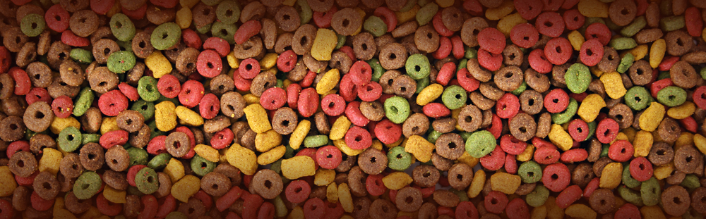
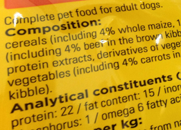

It's always alarming how many dog owners believe their sick dogs to be perfectly fine. Ask the question 'how's your dog doing' and most will tell you that their dog is the picture of health but even the briefest examinations often reveal that many of our four-legged friends really aren't doing that well at all.
The problem is that so many of the most common signs of ill health are now so widespread that they are seen by many as just a natural part of being a dog, like wagging the tail or sniffing other dogs bums.
Common signs of ill health in dogs that are often overlooked:
• Very smelly poo
• Greasy, smelly coat
• Rapid plaque buildup
• Occasional vomiting
• Runny eyes
• Obesity
• Itching
• Recurring ear problems
• Hyperactivity
• Chewing of the paws
• Recurring anal gland problems
• Constant moulting
• Bad breath
Together these issues plague a huge proportion of our dogs but most are never given a second thought. Worse yet, if these early warning signs are left unchecked, the problems can get a whole lot worse.
Diet and Health
Food is essential for good health as much in dogs as in humans. Through your dog's diet, he has to get everything his body needs: from the energy needed to keep chasing those balls to the incredible array of nutrients that make up every tissue and keep every cellular process going. Too much or too little of any one of those nutrients can quickly cause upsets and if something gets into your dog's diet that shouldn't be there, you can be sure that problems won't be far away.
From weaning right through to old age, it is diet more than any other factor that will determine the quality and the length of your dog's life and, the truth is, that most complete foods are failing our dogs.
All of us instinctively know what dogs should be eating - lots of yummy meat and bones. Anyone who has walked their dog in the country will also know that dogs enjoy all sorts of other natural foods like fruits, vegetables, herbs and so on. This is what nutritionists call the dog's 'natural diet'.
Most of us also now know what foods are not good for our health - excessive salt, sugar or fat, artificial additives and so on, all of which can be equally detrimental to our dogs as they are to us.
Despite all of this, if you take a look at almost any well known brand of dog food, you'll find an ingredients list chock-a-block with unhealthy ingredients and almost free from anything even resembling the natural diet.
Profit before pets
But why would companies make sub standard products? The answer is, of course, money. The first concern of most of the companies that make dog food is to turn as much profit as possible from their products. Good ingredients like meat and whole fruit and veg cost a lot so they are substituted with cheaper ingredients and fillers. But these ingredients are neither useful to the dog nor tasty so manufacturers add cheap protein supplements and vitamin and mineral mixes to make up for the lack of nutrients and sugars, salts and fats to make up for the lack of taste. Artificial colours might also be thrown in to make it appeal to the owner (they certainly aren't for the dogs as they are largely colour blind) and chemical preservatives are added to give it the incredibly long shelf life that consumers have come to expect.

The end result is a product that is intended first to sell and second to keep the dog alive. The fact that so many of the cheaper ingredients used in these foods have been consistently linked to health problems doesn't seem to enter the equation.
Wheat, for example, is perhaps the most commonly used filler in lower grade dog foods but it has long been known that dogs have a relatively high rate of gluten intolerance. Manufacturers know that a lot of customers now don't like seeing wheat on the label so they instead call it 'cereals', 'grains' or even 'derivatives of vegetable origin' to throw consumers off the scent.
Dogs need an adequate supply of protein to get by and that protein should come from meat but plant sources like maize protein, pea protein and soya are far cheaper. Unfortunately they are also much harder to digest [1] and therefore often cause dietary intolerance but that's not enough to stop manufacturers from routinely using plant proteins rather than real meat ingredients.
Worst of all is the widespread use of artificial additives in low grade pet foods. A number of common colourings have been widely linked to behavioural problems [2] and several artificial preservatives have been identified as possible causes of cancer [3].
Essentially, with every mouthful of food, your dog is taking in more and more toxins and the health problems mentioned above are the result. Sadly though, they are not the end of the story. It is believed by many nutritionists that these signs are just the start and as the months and years pass, and as the flow of toxins into the body does not subside, more troubling problems can develop. Chronic health problems like kidney disease, liver failure, heart problems, diabetes and even cancer have all been linked to diet and studies have shown that inappropriate diet can shorten our pets' lives by several years [4].
Food - the problem and the solution
But there is a fairly huge light at the end of the tunnel. Yes, diet is the source of many of these problems but it can also be the cure. By getting your dog's diet right, often by simply by moving to a better quality food, you can give your dog a new lease of life and often stop all of the problems mentioned above in their tracks.
And feeding better dog food doesn't have to break the bank either. With less fillers and far more nutrients per gram, you actually have to feed much less of a good food than of a low grade food - sometimes as much as half. When you also factor in vet bills, feeding good food can actually work out considerably cheaper in the long run.
The ingredients list
Finding a better food is all about the ingredients list. It is your window into the true nature of your dog's diet. Manufacturers are legally obliged to tell you what is in the food and although there are ways in which the truth can be obscured or embellished, this is usually easy to spot which makes it possible to separate the good foods from the bad or the possibly bad.
The first thing to look for is labeling clarity. Broad, umbrella terms like 'cereals' and 'meat and animal derivatives' that could refer to anything should be avoided as they make it impossible to know what is really in the food.
Ingredients have to be listed in order of their percentage so the first ingredient is the largest and most important part of the food, the second is the next largest and so on. Look for foods where the first ingredient is meat and named meats like chicken meal (as opposed to just meat meal, for example) are always better.
The chief nasties to avoid are artificial additives (preservatives, antioxidants and colourings), wheat, anything with derivative or by-product in the name, added salt and added sugars.
There are plenty of resources online to help finding a better food easier. Although I will confess to being a little biased, I think the All About Dog Food Forum really is an excellent place for friendly advice and support. Alternatively, local independent pet shops are usually a great source of advice on feeding.
Once you find a food your happy with, it's important to introduce it into the diet slowly, mixing it with the old food for around 5-7 days to give the digestive system plenty of time to adjust. Use the feeding guide on the packaging to get a rough idea of how much to feed and then adjust the amount until your dog is holding a healthy weight.
Improvements can take weeks or even months to come through so don't expect instant results. Take care not to overfeed and ensure that any treats and tidbits you provide also follow the above rules - your dog will thank you for it in the long run.
For decades, big pet food manufacturers have been perfecting the art of cutting the cost of making their products and our pets have been paying the price but with a simple switch to a better food, you can reset the balance and give your dog what he needs to thrive as nature intended.
References
Dog and Cat Food Macronutrients: Protein Part 1. Petnet.io. 5.8.2014. Link
The influence of nutrition on canine behaviour. R. A. Mugford. Journal of Small Animal Practice. Nov 1987. Link
Toxicology of the synthetic antioxidants BHA and BHT in comparison with the natural antioxidant vitamin E, University of Hamburg, 1993. Link
Relation Between the Domestic Dogs' Well-Being and Life Expectancy. Lippert, Gerard, DVM and Sapy, Bruno, DVM. 2003. Link